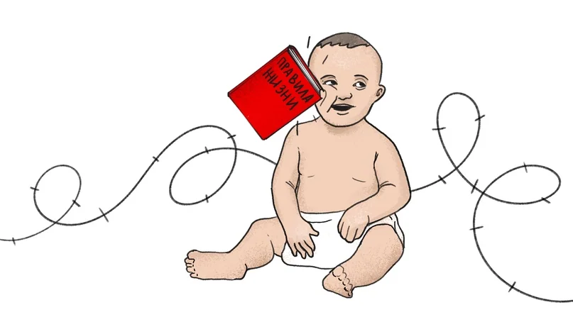
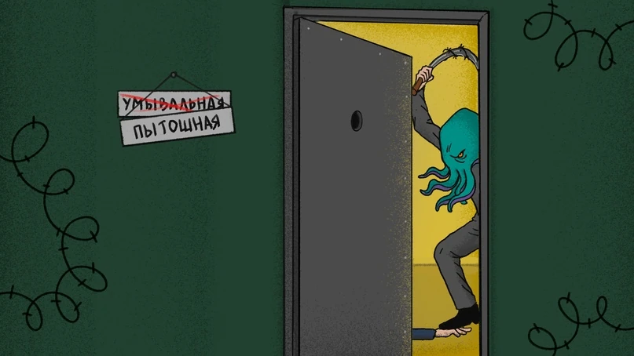
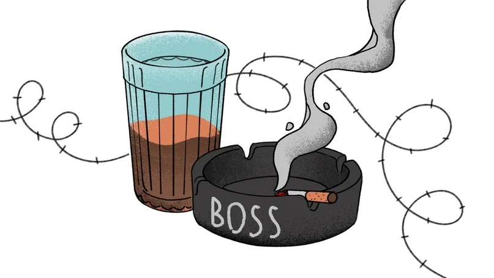

Лавкрафтовский ужас и пепельница с надписью BOSS: Mr. Nobody потихоньку обустраивается в бараке и узнает, как зеки наказывают нарушителей «тишины и спокойствия»
Нас гораздо проще сделать несчастными, чем счастливыми. Это одна из тех простых истин, которые знакомы буквально каждому. Правда, иногда, взрослея (к сожалению, в мрачном смысле) и набираясь опыта, некоторые учатся находить радости в мелочах. Жить так у меня не выходит, сколько бы я ни старался. Трезвый анализ подсказывает, что это уже серьезно — прямо какая-то трагедия духа. Зато годы, проведенные здесь, научили не искать источник счастья в людях.

Я завидую тем, кому не дано обычное среднечеловеческое ощущение, что ты — особенный, что у тебя все будет иначе, что с тобой не случится ничего плохого. Жизнь с самого начала бросает нам в лицо правила игры, а мы их не видим. Это напоминает гуляющие по интернету оптические иллюзии: например, сильно заштрихованный рисунок кошки. Твоя задача заключается в том, чтобы найти ее глазами. Сделав это, ты уже не сможешь потерять кошку из виду. Так происходит и с истинами — наблюдая со стороны, ты будешь видеть только штрихи, но когда обнаружишь что-либо самостоятельно, «развидеть» правду не получится.
Я понимаю, что правила игры обратны нашей бессознательной убежденности в преимуществе перед другими. То, что случается со всеми, будет происходить и со мной. Но когда твое личное счастье зависит от другого человека, истина снова заштриховывается. Снова рождается чувство исключительности, и чем дольше это продолжается, тем более безжалостным и болезненным будет удар, который разъебет твое восприятие светошумовой гранатой. Хорошо что тогда, семь лет назад, я был один и знал, что на свете нет человека, который может хоть на секунду задуматься о моей судьбе. И мне не о ком было думать.
Тогда, заходя в барак с табличкой «5-й отряд, 9-й отряд», я был неуязвим.
Началось многообещающе — двое широкоплечих парней вели под руки третьего, бледного и бесшумно шевелящего губами. Они зашли в просторное помещение, видимо, служившее умывальником, и закрыли за собой дверь.
Пока я стоял возле лестницы на второй этаж, ко мне подходили десятки людей, задавая вопросы, ответы на которые я подготовил, еще когда находился в СИЗО. Среди всех прочих выделялся один человек — худой высокий мужчина, очень взрослый на вид. Разговаривая, он яростно и стремительно жестикулировал, что не помешало мне рассмотреть засиненные наколками руки. На правой была такая татуировка:

Чуть ниже красовалась надпись: «В этот волшебный сон». Наколотая фраза звучала в одной композиции про Магадан, которую я в тюрьме услышал впервые. К тому же кто-то напевал ее в «столыпинском вагоне»:
Ма-а-агада-а-ан,
Значит опять домой,
В этот волшебный со-он.
Ма-а-агада-а-ан,
Той короткой весной
Я, как пацан, влюблен.
В песне сквозила какая-то особенная безысходность и спокойное принятие своей судьбы. Будто все хорошее уже было и больше никогда не будет. Тогда между моей жизнью и этими строками проводилась некая параллель. Я до сих пор не могу простить себе ту минутную слабость, когда русский шансон затронул струны моей души.
На каждом пальце правой руки моего собеседника были наколоты синие перстни, значения которых я не знаю даже сейчас. А на пальцах левой — цифры, видимо, означающие, что он родился в начале 80-х (иллюстрация).
Последнюю цифру заменял знак вопроса — смысл этой наколки тоже остается для меня загадкой.
Я сделал вывод, что этот почти состарившийся мужчина — какой-то блатной. Неспроста же у него столько тюремных партаков. Тем более, раньше (лет десять назад) за наколки был спрос — тату требовалось заслужить и «обосновать». На меня сыпались вопросы:
— Откуда сам?
— Из Москвы.
— А откуда именно?
— СВАО.
— А что за беда?
— Убийство.
— И сколько дали?
— ****ать лет.
— Ебать ты людоед. А чем по воле занимался? Работал?
— В универе учился.
— Ясно. Короче, я тут завхоз. Меня Дед зовут. Сейчас с ребятами пообщаемся, место тебе подберем, куда упасть.
Завхоз — «красная» должность. Он должен знать, сколько человек в отряде, кто из заключенных в карцере, а кто на свидании.
Я стоял в окружении незнакомых людей, продолжая отвечать на вопросы, и вдруг из умывальника раздался крик. Потом послышался громкий удар (следом пришло понимание, что такой же звук предшествовал крику) и снова вопль, уже с какой-то другой интонацией, слегка плачущей. Люди вокруг меня начали затравленно оглядываться, как будто то, что мы слышим, — необъяснимое явление, вроде призраков или оживших мертвецов. Снова крик, непрекращающийся. Он стал фоном, внутри которого слышались удары. Иногда вопли становились громкими и злыми, а порой — почти умоляющими. Я никогда не слышал, чтобы человек кричал так жутко.
Дверь, за которой происходил этот пиздец, открылась, и оттуда вышел какой-то качок. Мне удалось увидеть, что происходило в умывальнике: на полу ничком лежал человек. На его руках стоял здоровый парень с лицом генетически ущербного — оно светилось радостью. На некоторых людей насилие действует как кокаин — блуждающая улыбка, блеск в глазах и даже мурашки. Ноги жертвы были зафиксированы между ножек табуретки, на ней сидел другой качок. Третий — собственно, сам палач — был толстенным мужчиной низкого роста. Он стоял рядом с лежащим на полу парнем и вытирал со своего лба крупные капли пота. Он держал полутораметровый шланг, в некоторых местах обмотанный проволокой. У «орудия» была деревянная рукоятка, рассчитанная на то, чтобы держать его двумя руками. Толстяк замахнулся снова и дверь захлопнулась. Затем — удар и долгий дикий вопль, прерываемый чередой новых ударов.
Я не мог представить, что же сделал этот человек, чем заслужил такое наказание. Поэтому к моему не слишком стабильному эмоциональному состоянию прибавился какой-то лавкрафтовский ужас.

Через десять минут пытка прекратилась — из умывальника вышли трое спортсменов с красными от усилий лицами. Другие люди принялись бродить туда-сюда: заходили в пыточную, мыли посуду или просто наливали себе воды, перешагивая через тело, лежащее на холодном кафеле. Меня поразил этот контраст — всеобщее безразличие к несчастному на фоне каких-то бытовых дел. Все это не укладывалось у меня в голове — насилие не может и не должно быть настолько привычным. Тем временем избитый парень начал, кряхтя, подниматься. Пошатываясь, подошел к раковине и сунул голову под струю холодной воды (горячей, разумеется, не было). На него иногда поглядывали, но в остальном никто так и не проявил участия.
— Ну, что ты тут залип?
Из оцепенения меня вывел вопрос завхоза.
— Пошли, тут тебе нехуй делать. Пацаны зовут на разговор. Сумку оставь здесь, возле лестницы, — сказал он.
Мы поднялись на второй этаж, повернув налево, прошли по коридору и остановились перед закрытой дверью.
— Дальше сам. Только постучись.
Мой робкий стук, чье-то «Заходи», и я оказался в небольшом помещении с хорошей отделкой — оно напоминало номер в неплохом отеле. Посередине комнаты стоял стол, на нем — стеклянные кружки с чем-то горячим, тарелки с конфетами (не советскими «Ромашками», а всякими «Твикс»), пепельница с надписью BOSS (я едва удержался, чтобы не скорчить брезгливую рожу — все эти вещи, излишне характеризующие своего владельца, вроде футболок «sex-инструктор» или кружек с тем же BOSS, всегда вынуждали ставить плачевный диагноз) и, конечно же, небрежно лежащие смартфоны. Вокруг стола располагались мягкие диваны: из колонок доносилась песня — слух резали убогие рифмы (позже я узнал, что это играл «Каспийский груз»). Тяжелые шторы были плотно задернуты. За столом сидела та самая троица, которая избивала зека несколько минут назад.
— Ну, здравствуй. И откуда ты у нас такой? — сказал первый и, судя по всему, главный из них.
Мне не очень была ясна его формулировка — что вообще значит «такой»? Какой «такой»? Внешне я уже давно перестал сильно отличаться от подавляющего большинства осужденных.
— Здорово всем, — сказал я.
Я уже давно привык разговаривать, как уголовник — мне достаточно было просто переключить что-то в голове, и вот я уже то и дело твердил «базару нет», повторяя мимику, которая должна была сопутствовать этим словам. Мне сразу вспоминается прекрасная Толоконникова, пришедшая на интервью Дудя в мусорском кителе. Последний — вещь материальная, а моя мимика, интонации и лексикон — наоборот.
Оказалось, под фразой «откуда ты у нас такой» имелось в виду следующее: мне двадцать лет, учился в университете, залетел по серьезным статьям на длительный срок, попал в карцер еще с карантина по странной повинности.
Когда человек приезжает в лагерь, о нем уже все известно: где жил, кем жил и как, кого из «людей» знает и т.п. В черных колониях это обусловлено в первую очередь тесным общением уголовных элементов по всей стране. Даже если ты жил в самом захолустном поселке, смотрящий найдет, кому позвонить, чтобы «пробить за тебя».
Здесь осведомленность была другого рода: из разговора с качками (который длился больше часа) я понял, что они только выдают свои знания обо мне за плоды кропотливых «пробиваний». Спортсменам, видимо, был предоставлен доступ к моему личному делу, приехавшему со мной в колонию и составленному ментами — от следователей до ключников на разных «централах». Поэтому никаких неожиданностей во время разговора не возникало — в нужных местах я отвечал уклончиво, а в других — вежливо, но категорично.

Беседа закончилась так:
— Лагерь у нас своеобразный. Живи тихо, спокойно, никуда не лезь и все будет нормально. Пойдем посмотрим, куда тебе упасть.
За час болтовни я так и не присел. Слово «упасть», произнесенное качком, оказалось очень точным — спать хотелось неимоверно.
Поднявшись на второй этаж, я увидел умывальник (он же — кухня: напротив раковин стоял большой стол, за которым что-то готовили на двух электрических плитках). Неподалеку — двери туалета и душевой (мне объяснили, что этот душ — не для всех). Коридоры слева и справа от умывальника вели в жилые «секции», по тридцать-сорок человек в каждой.
Я зашел в большое помещение с четырьмя окнами по одной стороне, рядами шконок вдоль стен и телевизором, прикрепленным под потолком в самом конце этой огромной комнаты. Сам телик, кстати, был недешевым — я сразу понял, что его стоимость оплачивали те, кто не мог жить «тихо и спокойно». Лучше так, чем страдать под резиновым шлангом, как тот бедняга.
Меня расположили где-то в середине секции. В самом конце (как говорят, «в углах») спали спортсмены, а в начале — петухи (их тут было всего двое), шныри и другие сомнительные с точки зрения качков личности.
У местных спортсменов и их приближенных, помимо своей душевой и прочих привилегий, был даже дресс-код: они все носили только Nike — от тапок до кепок. Мобильные телефоны (разумеется, сенсорные) имелись только у них. Для обычных «мужиков» был выделен общий телефон на секцию, черно-белый Nokia.
Я познакомился со своими соседями (один из них сидел с 1993 года — это впечатляло), и мы вышли на улицу — в 16:00 в колонии проводилась проверка. Осужденные стояли на плацу по пять человек в шеренге, а сотрудники сверяли количество зеков, попутно вглядываясь в лица. Я заметил, что никого из спортсменов на проверке не было. После того как нас посчитали, я вернулся в барак, лег на кровать и, несмотря на шум вокруг, быстро провалился в сон.